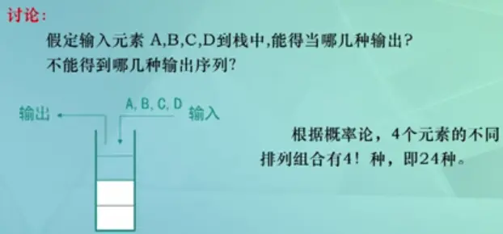
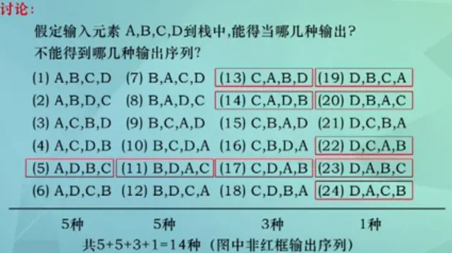
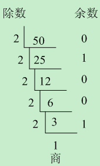

要点：栈（顺序栈、链栈）概念、栈结构的5大应用
先知：数组是一个线性结构，并且可以在数组的任意位置插入和删除元素。但是有时候，我们为了实现某些功能，必须对这种任意性加以限制 。栈和队列就是比较常见的受限的线性结构。
一、什么是栈
1.1 栈
栈（stack）是一种运算受限 的线性表 ：
1、LIFO（last in first out）表示就是后进入的元素，第一个弹出栈空间 。类似于自动餐托盘，最后放上的托盘，往往先把拿出去使用。
2、其限制是仅允许在表的一端进行插入 和删除 运算 。这一端被称为栈顶 ，相对地，把另一端称为栈底 。
3、向一个栈插入新元素又称作进栈、入栈或压栈，它是把新元素放到栈顶元素的上面，使之成为新的栈顶元素；
4、从一个栈删除元素又称作出栈或退栈，它是把栈顶元素删除掉，使其相邻的元素成为新的栈顶元素。
如下图所示：
栈的特点：先进后出，后进先出 。
常见问题：数制转换 表达式求值 括号匹配的检验 八皇后问题 行编辑程序 函数调用 迷宫求解 递归调用的实现
1.2 顺序栈&链栈
栈 是线性表的特例 ，其具备先进后出 FILO 特性
1.2.1 顺序栈
可以使用线性表的顺序存储结构（即数组）实现栈，将之称之为 顺序栈
1.2.2 链栈
可以使用单链表结构实现栈，将之称之为 链栈
1.2.3 顺序栈&链栈的异同
同【时间复杂度】
顺序栈和链栈的时间复杂度均为 $O(1)$
异【空间性能】
a顺序栈
顺序栈需要事先确定一个固定的长度 （数组长度）
可能存在内存空间浪费问题 ，但它的优势 是存取时定位很方便
b链栈
要求每个元素 都要配套一个指向下个结点的指针域
增大 了内存开销，但好处 是栈的长度无限
因此，如果 栈的使用过程中元素变化不可预料，有时很小，有时很大，那么最好使用链栈 ;
反之 ，如果它的变化在可控范围内，则建议使用顺序栈
1.3 栈的内部实现原理
栈的内部实现原理 其实就是数组或链表的操作
而之所以引入 栈 这个概念，是为了 将程序设计问题模型化
用高层的模块指导特定行为（栈的先进后出特性），划分了不同关注层次，使得思考范围缩小
更加聚焦于我们致力解决的问题核心，简化了程序设计的问题
二、程序中的栈结构
函数调用栈 ：A(B(C(D())))：
递归 ：
三、练习
题目1：
有 6 个元素 6，5，4，3，2，1 按顺序进栈，问下列哪一个不是合法的出栈顺序 ？
A：5 4 3 6 1 2 （√）
B：4 5 3 2 1 6 （√）
C：3 4 6 5 2 1 （×）
D：2 3 4 1 5 6 （√）
题目所说的按顺序进栈指的不是一次性全部进栈，而是有进有出，进栈顺序为 6 -> 5 -> 4 -> 3 -> 2 -> 1。
解析：
A 答案：65 进栈，5 出栈，4 进栈出栈，3 进栈出栈，6 出栈，21 进栈，1 出栈，2 出栈（整体入栈顺序符合 654321）。
B 答案：654 进栈，4 出栈，5 出栈，3 进栈出栈，2 进栈出栈，1 进栈出栈，6 出栈（整体的入栈顺序符合 654321）。
C 答案：6543 进栈，3 出栈，4 出栈，之后应该 5 出栈而不是 6，所以错误。
D 答案：65432 进栈，2 出栈，3 出栈，4 出栈，1 进栈出栈，5 出栈，6 出栈。符合入栈顺序。
题目2：

题目3：

四、栈结构实现
4.1 栈常见的操作
push() 添加一个新元素到栈顶位置。
pop() 移除栈顶的元素，同时返回被移除的元素。
peek() 返回栈顶的元素，不对栈做任何修改（该方法不会移除栈顶的元素，仅仅返回它）。
isEmpty() 如果栈里没有任何元素就返回 true，否则返回 false。
size() 返回栈里的元素个数。这个方法和数组的 length 属性类似。
toString() 将栈结构的内容以字符串的形式返回。
4.2 JavaScript 代码实现栈结构
顺序存储
用js内置对象Array实现
1 2 3 4 5 6 7 8 9 10 11 12 13 14 15 16 17 18 19 20 21 22 23 24 25 26 27 28 29 30 31 32 33 34 35 36 37 38 39 40 class Map constructor ( this .items = []; } push (item ) this .items.push(item); } pop ( return this .items.pop(); } peek ( return this .items[this .items.length - 1 ]; } isEmpty ( return this .items.length === 0 ; } size ( return this .items.length; } toString ( let result = "" ; for (let item of this .items) { result += item + " " ; } return result; } }
链式存储
1 2 3 4 5 6 7 8 9 10 11 12 13 14 15 16 17 18 19 20 21 22 23 24 25 26 27 28 29 30 31 32 33 34 35 36 37 38 39 40 41 42 43 44 45 46 47 48 49 50 51 52 53 54 55 56 57 58 59 60 61 62 63 64 65 66 67 68 69 function LinkedStack ( let Node = function (ele ) this .ele = ele; this .next = null ; } let length = 0 , top; this .push = function (ele ) let node = new Node(ele); top ? node.next = top : top = node; top = node; length++; return true ; } this .pop = function ( let current = top; if (top) { top = current.next; current.next = null ; length--; return current; } else { return 'null stack' ; } } this .top = function ( return top; } this .size = function ( return length; } this .toString = function ( let string = '' ; current = top; while (current) { string += current.ele + ' ' ; current = current.next; } return string; } this .clear = function ( top = null ; length = 0 ; return true ; } } let myStack = new LinkedStack();myStack.push('1' ) myStack.push('2' ) myStack.push('3' ) myStack.push('4' ) console .log(myStack.toString()) myStack.pop() console .log(myStack.toString()) myStack.pop() myStack.pop() console .log(myStack.pop()) console .log(myStack.pop())
4.3 测试封装的栈结构
1 2 3 4 5 6 7 8 9 10 11 12 13 14 15 16 17 18 19 20 stack.push(1 ); stack.push(2 ); stack.push(3 ); console .log(stack.items); console .log(stack.pop()); console .log(stack.peek()); console .log(stack.isEmpty()); console .log(stack.size()); console .log(stack.toString());
五、栈结构的简单应用
5.1 进制转换
利用栈结构的特点封装实现十进制转换为二进制 的方法。
原理：

1 2 3 4 5 6 7 8 9 10 11 12 13 14 15 16 17 18 19 function dec2bin (dec ) const stack = new Map (); while (dec > 0 ) { stack.push(dec % 2 ); dec = Math .floor(dec / 2 ); } let binaryString = "" ; while (!stack.isEmpty()) { binaryString += stack.pop(); } return binaryString; }
测试
1 2 3 console .log(dec2bin(100 )); console .log(dec2bin(88 ));
5.2 进制转换进阶
把十进制转化为任何进制
1 2 3 4 5 6 7 8 9 10 11 12 13 14 15 16 17 function baseConverter (decNum, base ) var base = (base >= 2 && base <= 16 ) ? base : 10 , remStack = new Stack(), rem, baseStr = '' , digits = '0123456789ABCDEF' ; while (decNum) { rem = Math .floor(decNum % base); decNum = Math .floor(decNum / base); remStack.push(rem); } while (!remStack.isEmpty()) { baseStr += digits[remStack.pop()]; } return baseStr; }
5.3 用栈判断回文
回文是这样一种现象：一个单词，短语或者数字，从前往后和从后往前写都是一样的 。比如单词“dad”，“racecar”就是回文；如果忽略空格和标点符号，下面这个句子也是回文，“A man, a plan, a canal: Panama”，数字1001也是回文。
使用栈可以轻松的判断一个字符是否是回文。我们将拿到的字符串的每个字符按照从左至右的顺序入栈 ，当所有字符都入栈之后站内就保存了一个反转后的字符串，最后的字符在栈顶，第一个在栈尾。字符串完全压入站内后，通过持续弹出栈中的每个字母就可以的大一个新的字符串，该字符串刚好与原来的字符串顺序相反。我们只要比较这两个字符串即可，如果他们相等就说明这个是一个回文。代码如下：
1 2 3 4 5 6 7 8 9 10 11 12 13 14 15 16 17 18 19 20 21 22 23 24 25 26 27 28 function isPalindrome (word ) var s = new Stack(); for (var i=0 ; i<word.length; ++i) { s.push(word[i]); } var reword = "" ; while (s.length()>0 ){ reword += s.pop(); } if (word == reword){ return true ; }else { return false ; } } var word = "hello" ;if (isPalindrome(word)){ document .writeln(word + " is a palindrome." ); }else { document .writeln(word + " is not a palindrome" ); } word = "racecar" ; if (isPalindrome(word)){ document .writeln(word + " is a palindrome." ); }else { document .writeln(word + " is not a palindrome" ); }
输出结果如下：
hello is not a palindrome
5.4 用栈实现递归
计算阶乘可以使用递归算法，如下：
1 2 3 4 5 6 7 8 function factorial (n ) if (n === 0 ) { return 1 ; } else { return n * factorial(n-1 ); } }
使用栈来模拟阶乘过程，例如：首先将5到1压入栈内，然后使用给一个循环，将数字一次弹出连乘就得到正确的答案，代码如下：
1 2 3 4 5 6 7 8 9 10 11 12 function fact (n ) var s = new Stack(); while (n>1 ){ s.push(n--); } var product = 1 ; while (s.length()>0 ){ product *= s.pop(); } return product; } document .writeln(fact(5 ));
5.5 使用栈判断表达式中的括号是否完整
表达式中的{和}，(和)，[和]必须是匹配的，不然的话表达式就会出现语法错误，使用栈可以判断表达式中的括号是否左右匹配。思路是遇到左括号就入栈，遇到右括号就和当前栈顶元素匹配，如果匹配成功就将栈顶元素出栈，最后判断栈中元素个数，如果是0就代表是完整的，否则就是不完整的。代码如下：
1 2 3 4 5 6 7 8 9 10 11 12 13 14 15 16 17 18 19 20 21 22 23 24 25 26 function isMatch (str ) var left = "({[" ; var right = ")}]" ; var s = new Stack(); var i = 0 ; while (str[i]){ if (left.indexOf(str[i])>-1 ){ s.push(str[i]) } else if ( right.indexOf(str[i])>-1 && right.indexOf( str[i] ) == left.indexOf( s.peek()) ){ s.pop(); } i++ } if (s.length() == 0 ){ document .writeln(str + " is match success" ); }else { document .writeln(str + " is not match" ); } } isMatch("2.3 + {23 / 12 + (3.14159×0.24)" );
Tips:
Please indicate the source and original author when reprinting or quoting this article.